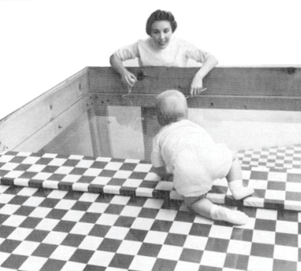

The Big Picture: The Biological Blueprint
Physical development is a lifelong journey that maps out how our bodies grow, change, mature, and eventually decline. This journey is largely dictated by maturation: the natural, biologically driven process of physical and cognitive development that unfolds over a predictable timeline, independent of experience or training. While the order of developmental milestones is virtually identical across humans (e.g., crawling before walking), the exact timing can vary widely from child to child.
1.Before Birth: Prenatal Vulnerabilities
Our physical development begins long before our first breath, and the womb is not a perfectly isolated environment. Maternal illness, genetic mutations, and hormonal imbalances can heavily influence major milestones. Most notably, the developing fetus is highly vulnerable to teratogens: harmful environmental substances or agents, such as alcohol, nicotine, specific drugs, or infections, that can cross the placental barrier and cause severe birth defects.
The most heavily tested example of a teratogenic effect is Fetal Alcohol Syndrome. This condition occurs due to prenatal alcohol exposure and can result in lifetime challenges, including distinct facial and physical abnormalities, cognitive impairments, and behavioral struggles.
💡 AP Exam Tip: To save yourself valuable study time, note that the specific structural stages of prenatal development, the zygote, embryo, and fetus, are explicitly outside the scope of the AP Psychology Exam!
2.Infancy and Childhood: Reflexes, Motors, and Windows
Newborns enter the world equipped with reflexes, which are inborn, automatic responses to specific stimuli designed to support survival and protect the body. A classic example is the rooting reflex: when an infant's cheek is gently touched or stroked, they automatically turn their head toward the stimulus and open their mouth to search for a food source.
Motor Skill Development
As children grow and their nervous systems mature, they develop the independence needed to navigate the world by mastering two distinct types of movement:
- Gross Motor Coordination
- The ability to control large muscle groups to execute broad physical actions like rolling over, sitting up, crawling, walking, and maintaining balance.
- Fine Motor Coordination
- The precise control of small muscle movements, particularly in the hands and fingers, required to accomplish intricate tasks like holding a crayon, writing, buttoning clothing, or using utensils.
Beyond tracking physical milestones, researchers have also investigated how early infants develop the ability to perceive their surroundings. The Visual Cliff is a landmark laboratory apparatus used to test depth perception in infants and young animals, using a glass surface that creates the illusion of a sudden drop-off. By observing whether crawling infants were willing to venture across the "cliff" side despite encouragement from a caregiver, researchers demonstrated that the ability to perceive depth develops remarkably early in infancy.

Windows of Growth: Critical vs. Sensitive Periods
The timing of our experiences matters immensely during early childhood. Psychologists distinguish between two kinds of developmental windows:
- Critical Periods
- Strict, rigid time frames during which an organism is uniquely sensitive to environmental stimuli, and specific abilities or traits must develop normally. If the window passes without exposure, the ability may be permanently lost. For instance, some non-human animals experience a critical period for imprinting, a rapid and innate form of learning where they form an unbreakable attachment to the very first moving object they see.
- Sensitive Periods
- Flexible windows of time when the brain is highly responsive to certain environmental experiences, making learning much easier and more efficient (such as acquiring a primary language). While development is optimal during this phase, a person can still successfully learn the skill later in life, though it may require much more effort.
3.Adolescence: The Biological Shift
The transition from childhood to adulthood is triggered by puberty, a dramatic developmental stage marked by intense hormonal changes and rapid physical maturation that renders the body capable of biological reproduction. This stage is universally accompanied by an adolescent growth spurt: a rapid acceleration in height and weight.
During puberty, physical traits develop across two distinct categories:
- Primary Sex Characteristics
- The internal reproductive organs and external anatomical structures directly involved in reproduction, such as the ovaries, testes, uterus, and genitalia, which mature to full functionality.
- Secondary Sex Characteristics
- Non-reproductive physical traits that emerge due to hormonal shifts but are not directly required for reproduction. Examples include breast development, voice deepening, and the growth of body hair.
Two essential milestones anchor the onset of adolescent reproductive maturity: menarche (the first occurrence of menstruation in females) and spermarche (the first ejaculation of sperm in males).
4.Adulthood: Leveling Off and Decline
Adulthood spans the majority of the human life layout. Early adulthood is generally characterized by a peak and general leveling off of physical abilities. However, as individuals move into middle and late adulthood, they experience a varying, natural biological decline.
This aging process leads to a gradual reduction in overall mobility, muscle flexibility, and reaction time. Furthermore, sensory systems undergo changes, resulting in a predictable decline in both visual and auditory sensory acuity. For women in middle adulthood, this period includes menopause: the natural biological stage where menstrual cycles permanently conclude, marking the end of structural fertility.
5.Don't Trip Up! (Common Misconceptions)
⚠️ Primary vs. Secondary Characteristics: A common trap on the AP Exam is misclassifying physical changes during puberty. Always ask yourself: Is this structure physically necessary to make or carry a baby? If yes (like ovaries or testes), it is a primary sex characteristic. If it is an external sign of maturity that doesn't actually execute reproduction (like facial hair or widening hips), it is a secondary sex characteristic.
⚠️ Critical vs. Sensitive Periods: This is a very common mix-up! To keep them straight, remember that a Critical Period is a rigid, "now or never" window. If an organism misses this specific window, the developmental trait (like imprinting in animals) will likely never develop normally. A Sensitive Period is much more flexible, it is the optimal and easiest time to learn a skill (like a child acquiring a second language), but the skill can still be learned later in life; it will just require much more effort.
6.Key Terms in This Topic
7.Practice This Topic
Test yourself on exactly what you just read. The numbers on each button show how much material is waiting for you.
The same self-check questions that close your guided notes. Find out whether physical development stuck.
Start Quick Check →Flip through the key terms from this topic, including teratogens, critical periods, and the visual cliff.
Open the deck →AP-style multiple choice on prenatal development, motor skills, puberty, and aging, with an explanation after every answer.
Take the quiz →